# bsub -q fat -W 48:00 -n 1 Rscript -e "setwd('/usr/users/rarslan/updated_data/2_swed_main_effects_surv/');knitr::knit(input = '2_swed_main_effects.Rmd', output = '2_swed_main_effects.md')"
library(data.table); library(ggplot2); library(knitr); library(lme4); library(formr); library(blme)
opts_chunk$set(warning=TRUE, cache=T,cache.lazy=F,tidy=FALSE,autodep=TRUE,dev=c('png','pdf'),fig.width=20,fig.height=12.5,out.width='1440px',out.height='900px',cache.extra=file.info('swed1.rdata')[, 'mtime'])
source("0__helpers.R")
load("swed1.rdata")
swed.2 = swed.2[byear > 1969, ]
# library(dplyr)
# swed.2 %>% group_by(idParents) %>% summarise(sibs = n()) %>% ggplot() + geom_bar(aes(sibs))The swed.1 dataset contains only those participants where paternal age is known, the birthdate of the father is between 1890 and 1900. ### Model description All of the following models have the following in common:
Bobyqa is fairly robust to convergence failures. In addition to using Bobyqa, we center some variables that otherwise lead to large eigenvalues.
control_defaults = glmerControl(optimizer = "bobyqa")We control for birth.cohort (birth years in five equally large bins), male sex.
We added random intercepts for each family (father-mother dyad). We then controlled for the average paternal age in the family. Hence, the paternal age effects in the plot are split into those between families and those within families or between siblings. The relevant effect for our hypothesized mechanism, de novo mutations, is paternal age between siblings.
Here, episodes of selection refers to survival, mating success, reproductive success. To steer clear of sacrificial pseudo-replication, we make sure that each effect cannot be explained by the episode of selection preceding it. At its simplest, we check for effect on survival to reproduction only among those who lived to their first birthday. In later models, we look for an effect on number of children only among those who married and control their number of spouses.
unlike the other models we don’t compute the number of surviving children. The pragmatic reason is that a) if we force data to span enough time for children’s survival to count as observed, we dramatically reduce sample size and b) child mortality in modern Sweden is so low, that there really shouldn’t be much of a difference between the two numbers
Children_all <- bglmer(
children ~ male + birth.cohort + paternalage.mean + paternalage.diff + (1|idParents),
data= swed.1, subset = byear < 1958,
family = 'poisson', control = control_defaults,
fixef.prior = normal() )
summary(Children_all)## Cov prior : idParents ~ wishart(df = 3.5, scale = Inf, posterior.scale = cov, common.scale = TRUE)
## Fixef prior: normal(sd = c(10, 2.5, ...), corr = c(0 ...), common.scale = FALSE)
## Prior dev : 44.44
##
## Generalized linear mixed model fit by maximum likelihood (Laplace
## Approximation) [bglmerMod]
## Family: poisson ( log )
## Formula:
## children ~ male + birth.cohort + paternalage.mean + paternalage.diff +
## (1 | idParents)
## Data: swed.1
## Control: control_defaults
## Subset: byear < 1958
##
## AIC BIC logLik deviance df.resid
## 3949126 3949222 -1974555 3949110 1207595
##
## Scaled residuals:
## Min 1Q Median 3Q Max
## -1.415 -0.642 0.095 0.770 11.486
##
## Random effects:
## Groups Name Variance Std.Dev.
## idParents (Intercept) 2.38e-05 0.00487
## Number of obs: 1207603, groups: idParents, 795812
##
## Fixed effects:
## Estimate Std. Error z value Pr(>|z|)
## (Intercept) 0.64926 0.00140 462 < 2e-16 ***
## male -0.05725 0.00134 -43 < 2e-16 ***
## birth.cohort(1949,1951] -0.00286 0.00201 -1 0.15480
## birth.cohort(1951,1954] -0.00639 0.00180 -4 0.00039 ***
## birth.cohort(1954,1957] -0.01092 0.00180 -6 1.3e-09 ***
## paternalage.mean -0.02756 0.00114 -24 < 2e-16 ***
## paternalage.diff -0.03475 0.00202 -17 < 2e-16 ***
## ---
## Signif. codes: 0 '***' 0.001 '**' 0.01 '*' 0.05 '.' 0.1 ' ' 1
##
## Correlation of Fixed Effects:
## (Intr) male b.(194 b.(1951 b.(1954 ptrnlg.m
## male -0.472
## b.(1949,195 -0.541 -0.003
## b.(1951,195 -0.605 -0.003 0.423
## b.(1954,195 -0.607 -0.003 0.424 0.475
## paternlg.mn -0.062 0.001 0.026 0.049 0.072
## patrnlg.dff 0.015 0.001 -0.011 -0.021 -0.030 -0.091Children_all_coefs = fortify_mine(Children_all)
plot_fortified_mer(Children_all_coefs, "Nr. Children (of those who had at least one spouse)")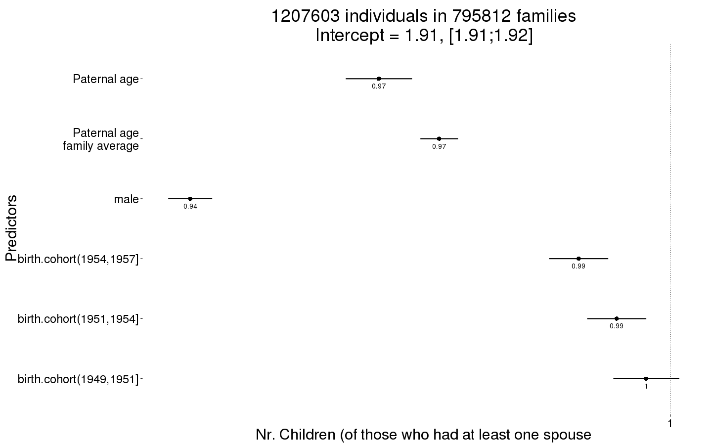
plot_residuals(Children_all)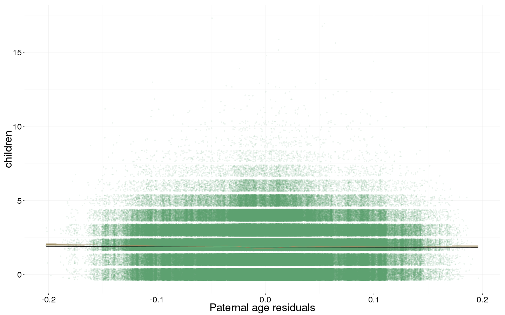
swed.1$any_children = ifelse(swed.1$children > 0, 1, 0)
Any_children <- bglmer(
any_children ~ birth.cohort + male + paternalage.mean + paternalage.diff + (1|idParents),
data= swed.1, subset = byear < 1958,
family = 'binomial', control = control_defaults,
fixef.prior = normal() )
summary(Any_children)## Cov prior : idParents ~ wishart(df = 3.5, scale = Inf, posterior.scale = cov, common.scale = TRUE)
## Fixef prior: normal(sd = c(10, 2.5, ...), corr = c(0 ...), common.scale = FALSE)
## Prior dev : 28.92
##
## Generalized linear mixed model fit by maximum likelihood (Laplace
## Approximation) [bglmerMod]
## Family: binomial ( logit )
## Formula:
## any_children ~ birth.cohort + male + paternalage.mean + paternalage.diff +
## (1 | idParents)
## Data: swed.1
## Control: control_defaults
## Subset: byear < 1958
##
## AIC BIC logLik deviance df.resid
## 1185433 1185529 -592708 1185417 1207595
##
## Scaled residuals:
## Min 1Q Median 3Q Max
## -2.935 0.332 0.386 0.445 1.177
##
## Random effects:
## Groups Name Variance Std.Dev.
## idParents (Intercept) 0.789 0.888
## Number of obs: 1207603, groups: idParents, 795812
##
## Fixed effects:
## Estimate Std. Error z value Pr(>|z|)
## (Intercept) 2.00871 0.00583 345 <2e-16 ***
## birth.cohort(1949,1951] -0.09487 0.00781 -12 <2e-16 ***
## birth.cohort(1951,1954] -0.17527 0.00696 -25 <2e-16 ***
## birth.cohort(1954,1957] -0.25876 0.00693 -37 <2e-16 ***
## male -0.44408 0.00519 -86 <2e-16 ***
## paternalage.mean -0.18431 0.00446 -41 <2e-16 ***
## paternalage.diff -0.02356 0.00777 -3 0.0024 **
## ---
## Signif. codes: 0 '***' 0.001 '**' 0.01 '*' 0.05 '.' 0.1 ' ' 1
##
## Correlation of Fixed Effects:
## (Intr) b.(194 b.(1951 b.(1954 male ptrnlg.m
## b.(1949,195 -0.527
## b.(1951,195 -0.598 0.444
## b.(1954,195 -0.611 0.448 0.513
## male -0.514 -0.001 0.002 0.003
## paternlg.mn -0.097 0.027 0.053 0.078 0.008
## patrnlg.dff 0.027 -0.023 -0.047 -0.069 0.002 -0.096Any_children_coefs = fortify_mine(Any_children)
plot_fortified_mer(Any_children_coefs, "Any children")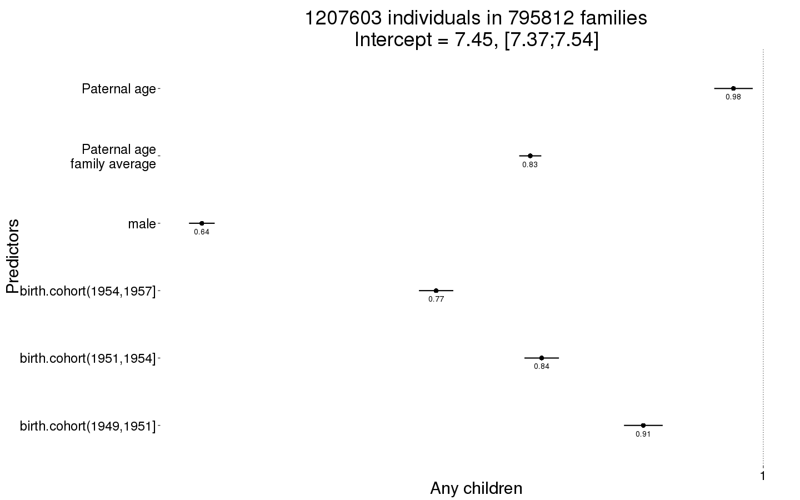
plot_residuals(Any_children)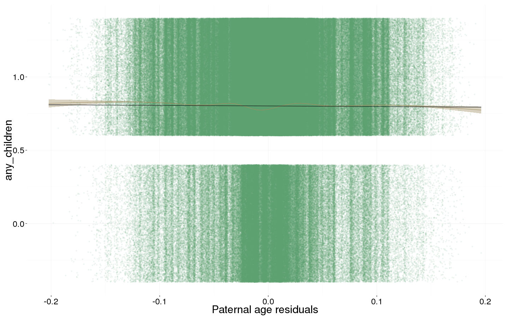
Survive_infancy <- glmer(
survive1y ~ birth.cohort + male + paternalage.mean + paternalage.diff + (1|idParents),
data= swed.2,
family = 'binomial', control = glmerControl(optimizer = "bobyqa"),
nAGQ = 0 )
summary(Survive_infancy)## Generalized linear mixed model fit by maximum likelihood (Adaptive
## Gauss-Hermite Quadrature, nAGQ = 0) [glmerMod]
## Family: binomial ( logit )
## Formula:
## survive1y ~ birth.cohort + male + paternalage.mean + paternalage.diff +
## (1 | idParents)
## Data: swed.2
## Control: glmerControl(optimizer = "bobyqa")
##
## AIC BIC logLik deviance df.resid
## 216611 216728 -108296 216593 3315763
##
## Scaled residuals:
## Min 1Q Median 3Q Max
## -11.764 0.062 0.070 0.078 0.566
##
## Random effects:
## Groups Name Variance Std.Dev.
## idParents (Intercept) 1.43 1.2
## Number of obs: 3315772, groups: idParents, 1828187
##
## Fixed effects:
## Estimate Std. Error z value Pr(>|z|)
## (Intercept) 4.9491 0.0175 282.5 < 2e-16 ***
## birth.cohort(1974,1981] 0.3215 0.0216 14.9 < 2e-16 ***
## birth.cohort(1981,1988] 0.4703 0.0222 21.2 < 2e-16 ***
## birth.cohort(1988,1993] 0.6033 0.0242 24.9 < 2e-16 ***
## birth.cohort(1993,1999] 0.9564 0.0275 34.8 < 2e-16 ***
## male -0.2333 0.0154 -15.2 < 2e-16 ***
## paternalage.mean -0.2208 0.0135 -16.4 < 2e-16 ***
## paternalage.diff 0.1904 0.0275 6.9 4.2e-12 ***
## ---
## Signif. codes: 0 '***' 0.001 '**' 0.01 '*' 0.05 '.' 0.1 ' ' 1
##
## Correlation of Fixed Effects:
## (Intr) b.(197 b.(1981 b.(1988 b.(199 male ptrnlg.m
## b.(1974,198 -0.598
## b.(1981,198 -0.592 0.475
## b.(1988,199 -0.547 0.435 0.435
## b.(1993,199 -0.487 0.385 0.386 0.359
## male -0.500 0.000 -0.001 0.000 0.000
## paternlg.mn 0.132 -0.056 -0.117 -0.126 -0.150 0.001
## patrnlg.dff 0.029 0.006 -0.016 -0.030 -0.029 0.002 0.041Survive_infancy_coefs = fortify_mine(Survive_infancy)
plot_fortified_mer(Survive_infancy_coefs, "Surviving infancy / first year")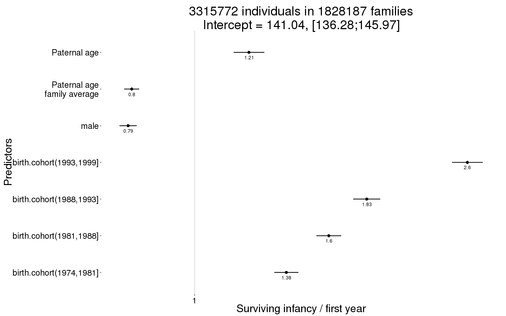
plot_residuals(Survive_infancy)## Warning in checkConv(attr(opt, "derivs"), opt$par, ctrl = control$checkConv, : Model is nearly unidentifiable: very large eigenvalue
## - Rescale variables?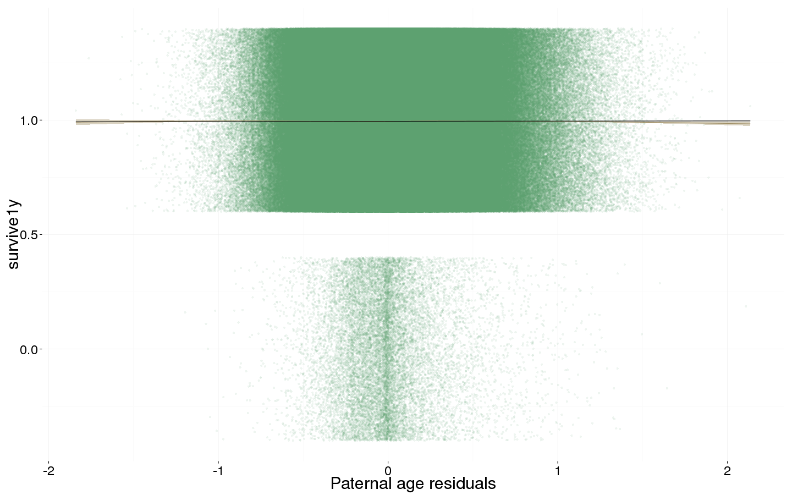
Survive_reproductive <- glmer(
surviveR ~ birth.cohort + male + paternalage.mean + paternalage.diff + (1|idParents),
data= swed.2, subset = survive1y == TRUE & byear < 1990,
family = 'binomial', control = control_defaults,
nAGQ = 0 )
summary(Survive_reproductive)## Generalized linear mixed model fit by maximum likelihood (Adaptive
## Gauss-Hermite Quadrature, nAGQ = 0) [glmerMod]
## Family: binomial ( logit )
## Formula:
## surviveR ~ birth.cohort + male + paternalage.mean + paternalage.diff +
## (1 | idParents)
## Data: swed.2
## Control: control_defaults
## Subset: survive1y == TRUE & byear < 1990
##
## AIC BIC logLik deviance df.resid
## 74695 74796 -37340 74679 2169610
##
## Scaled residuals:
## Min 1Q Median 3Q Max
## -15.932 0.044 0.048 0.053 0.322
##
## Random effects:
## Groups Name Variance Std.Dev.
## idParents (Intercept) 1.64 1.28
## Number of obs: 2169618, groups: idParents, 1286846
##
## Fixed effects:
## Estimate Std. Error z value Pr(>|z|)
## (Intercept) 5.8909 0.0290 203.1 < 2e-16 ***
## birth.cohort(1974,1981] 0.3089 0.0338 9.1 < 2e-16 ***
## birth.cohort(1981,1988] 0.4492 0.0348 12.9 < 2e-16 ***
## birth.cohort(1988,1993] 0.5390 0.0693 7.8 7.5e-15 ***
## male -0.2973 0.0278 -10.7 < 2e-16 ***
## paternalage.mean -0.1822 0.0248 -7.3 2.2e-13 ***
## paternalage.diff 0.4348 0.0487 8.9 < 2e-16 ***
## ---
## Signif. codes: 0 '***' 0.001 '**' 0.01 '*' 0.05 '.' 0.1 ' ' 1
##
## Correlation of Fixed Effects:
## (Intr) b.(197 b.(1981 b.(1988 male ptrnlg.m
## b.(1974,198 -0.571
## b.(1981,198 -0.568 0.478
## b.(1988,199 -0.287 0.240 0.240
## male -0.563 0.000 -0.001 0.000
## paternlg.mn 0.158 -0.068 -0.139 -0.076 0.001
## patrnlg.dff 0.066 0.006 -0.024 -0.018 0.002 0.055Survive_reproductive_coefs = fortify_mine(Survive_reproductive)
plot_fortified_mer(Survive_reproductive_coefs, "Surviving to reproductive age / 15 years")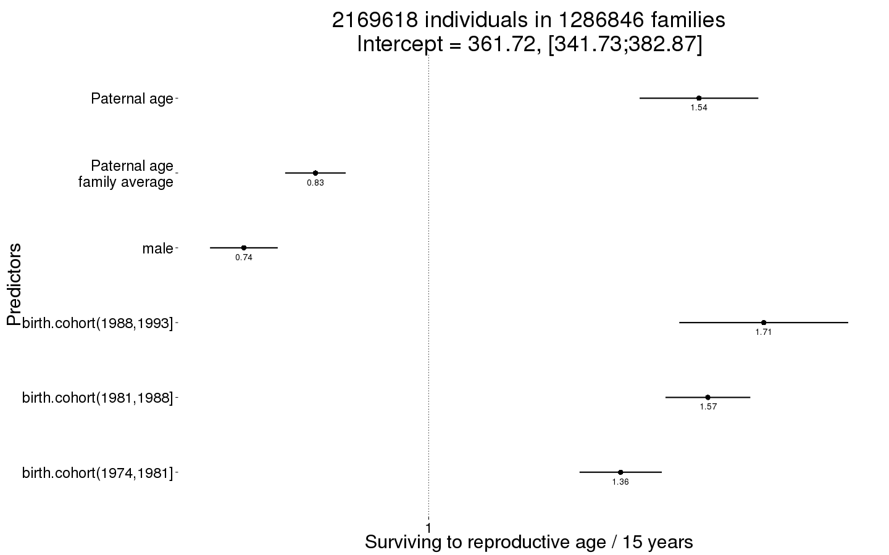
plot_residuals(Survive_reproductive)## Warning in checkConv(attr(opt, "derivs"), opt$par, ctrl = control$checkConv, : Model is nearly unidentifiable: very large eigenvalue
## - Rescale variables?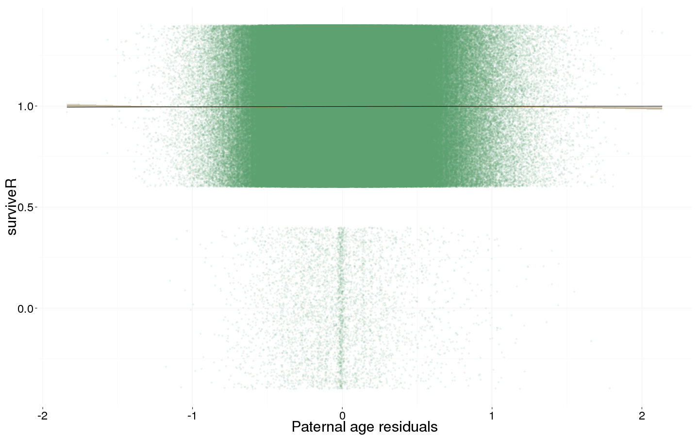
Ever_married <- bglmer(
ever_married ~ birth.cohort + male + paternalage.mean + paternalage.diff + (1|idParents),
data= swed.1, subset = (surviveR == T | is.na(surviveR)) & byear < 1960,
family = 'binomial', control = control_defaults,
fixef.prior = normal() )
summary(Ever_married)## Cov prior : idParents ~ wishart(df = 3.5, scale = Inf, posterior.scale = cov, common.scale = TRUE)
## Fixef prior: normal(sd = c(10, 2.5, ...), corr = c(0 ...), common.scale = FALSE)
## Prior dev : 33.62
##
## Generalized linear mixed model fit by maximum likelihood (Laplace
## Approximation) [bglmerMod]
## Family: binomial ( logit )
## Formula:
## ever_married ~ birth.cohort + male + paternalage.mean + paternalage.diff +
## (1 | idParents)
## Data: swed.1
## Control: control_defaults
## Subset: (surviveR == T | is.na(surviveR)) & byear < 1960
##
## AIC BIC logLik deviance df.resid
## 1574406 1574515 -787194 1574388 1402935
##
## Scaled residuals:
## Min 1Q Median 3Q Max
## -2.757 -1.098 0.476 0.563 1.326
##
## Random effects:
## Groups Name Variance Std.Dev.
## idParents (Intercept) 0.442 0.664
## Number of obs: 1402944, groups: idParents, 884054
##
## Fixed effects:
## Estimate Std. Error z value Pr(>|z|)
## (Intercept) 1.77684 0.00521 341 <2e-16 ***
## birth.cohort(1949,1951] -0.23331 0.00714 -33 <2e-16 ***
## birth.cohort(1951,1954] -0.42604 0.00630 -68 <2e-16 ***
## birth.cohort(1954,1957] -0.63336 0.00620 -102 <2e-16 ***
## birth.cohort(1957,1959] -0.80199 0.00679 -118 <2e-16 ***
## male -0.38920 0.00417 -93 <2e-16 ***
## paternalage.mean -0.10584 0.00362 -29 <2e-16 ***
## paternalage.diff 0.00317 0.00621 1 0.61
## ---
## Signif. codes: 0 '***' 0.001 '**' 0.01 '*' 0.05 '.' 0.1 ' ' 1
##
## Correlation of Fixed Effects:
## (Intr) b.(194 b.(1951 b.(1954 b.(1957 male ptrnlg.m
## b.(1949,195 -0.565
## b.(1951,195 -0.646 0.467
## b.(1954,195 -0.665 0.477 0.547
## b.(1957,195 -0.613 0.435 0.500 0.517
## male -0.455 0.002 0.007 0.012 0.013
## paternlg.mn -0.078 0.025 0.048 0.072 0.086 0.006
## patrnlg.dff 0.026 -0.017 -0.035 -0.054 -0.060 0.001 -0.096Ever_married_coefs = fortify_mine(Ever_married)
plot_fortified_mer(Ever_married_coefs, "Odds of ever marrying")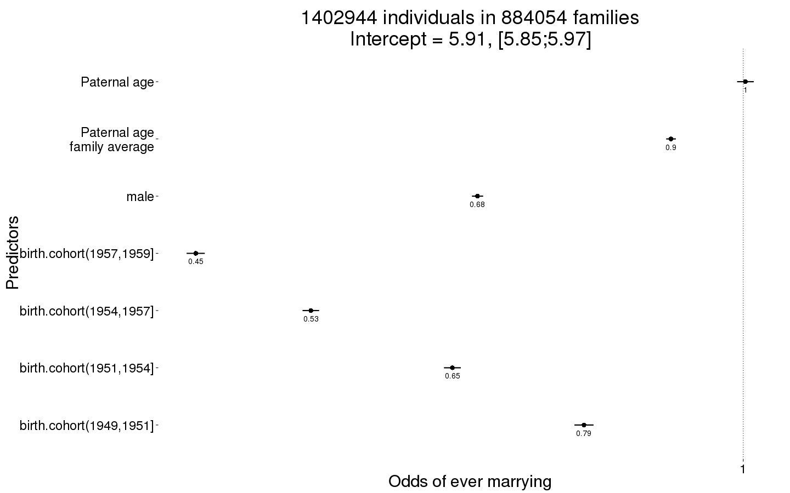
plot_residuals(Ever_married)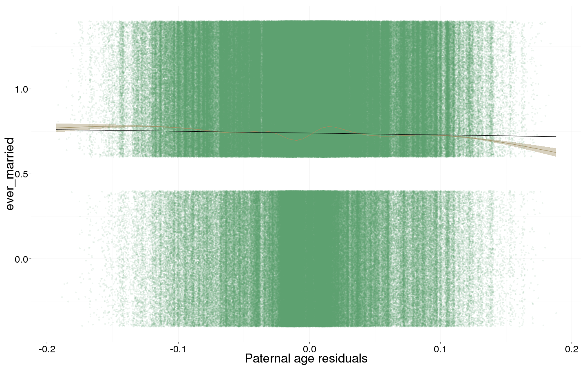
Children <- bglmer(
children ~ center(spouses)*male + birth.cohort + paternalage.mean + paternalage.diff + (1|idParents),
data= swed.1, subset = spouses > 0 & byear < 1958,
family = 'poisson', control = control_defaults,
fixef.prior = normal() )
summary(Children)## Cov prior : idParents ~ wishart(df = 3.5, scale = Inf, posterior.scale = cov, common.scale = TRUE)
## Fixef prior: normal(sd = c(10, 2.5, ...), corr = c(0 ...), common.scale = FALSE)
## Prior dev : 55.38
##
## Generalized linear mixed model fit by maximum likelihood (Laplace
## Approximation) [bglmerMod]
## Family: poisson ( log )
## Formula:
## children ~ center(spouses) * male + birth.cohort + paternalage.mean +
## paternalage.diff + (1 | idParents)
## Data: swed.1
## Control: control_defaults
## Subset: spouses > 0 & byear < 1958
##
## AIC BIC logLik deviance df.resid
## 2874285 2874402 -1437133 2874265 899026
##
## Scaled residuals:
## Min 1Q Median 3Q Max
## -1.994 -0.230 -0.080 0.561 10.211
##
## Random effects:
## Groups Name Variance Std.Dev.
## idParents (Intercept) 2.17e-06 0.00147
## Number of obs: 899036, groups: idParents, 647504
##
## Fixed effects:
## Estimate Std. Error z value Pr(>|z|)
## (Intercept) 0.67908 0.00181 374 < 2e-16 ***
## center(spouses) 0.10063 0.00191 53 < 2e-16 ***
## male 0.01123 0.00175 6 1.3e-10 ***
## birth.cohort(1949,1951] 0.04459 0.00216 21 < 2e-16 ***
## birth.cohort(1951,1954] 0.06545 0.00198 33 < 2e-16 ***
## birth.cohort(1954,1957] 0.07946 0.00200 40 < 2e-16 ***
## paternalage.mean 0.00047 0.00124 0 0.7
## paternalage.diff -0.03094 0.00214 -14 < 2e-16 ***
## center(spouses):male 0.03998 0.00285 14 < 2e-16 ***
## ---
## Signif. codes: 0 '***' 0.001 '**' 0.01 '*' 0.05 '.' 0.1 ' ' 1
##
## Correlation of Fixed Effects:
## (Intr) cntr() male b.(194 b.(1951 b.(1954 ptrnlg.m ptrnlg.d
## centr(spss) -0.572
## male -0.528 0.419
## b.(1949,195 -0.522 0.148 0.026
## b.(1951,195 -0.605 0.217 0.048 0.437
## b.(1954,195 -0.604 0.221 0.049 0.435 0.490
## paternlg.mn -0.076 0.036 0.007 0.033 0.057 0.079
## patrnlg.dff 0.013 0.000 -0.001 -0.011 -0.021 -0.030 -0.092
## cntr(spss): 0.306 -0.644 -0.566 -0.029 -0.057 -0.055 0.000 0.003Children_coefs = fortify_mine(Children)
plot_fortified_mer(Children_coefs, "Nr. Children (of those who had at least one spouse)")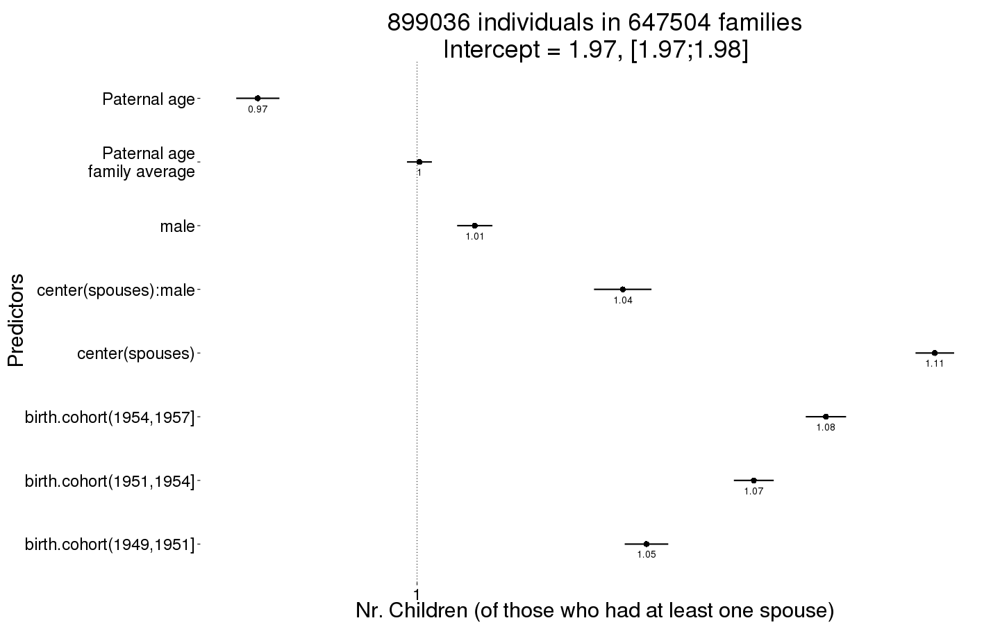
plot_residuals(Children)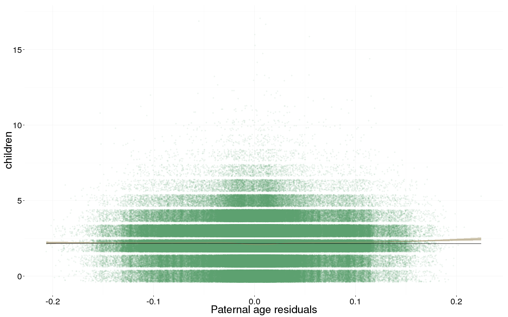
name = "swed_main_effects"
save(list = lstype('confint.merMod'),file=paste0("coefs/",name,"_coefs.rdata"))
save(list = lstype(),file=paste0("coefs/",name,"_models.rdata"))sessionInfo()## R version 3.1.0 (2014-04-10)
## Platform: x86_64-redhat-linux-gnu (64-bit)
##
## locale:
## [1] LC_CTYPE=en_US LC_NUMERIC=C LC_TIME=en_US
## [4] LC_COLLATE=en_US LC_MONETARY=en_US LC_MESSAGES=en_US
## [7] LC_PAPER=en_US LC_NAME=C LC_ADDRESS=C
## [10] LC_TELEPHONE=C LC_MEASUREMENT=en_US LC_IDENTIFICATION=C
##
## attached base packages:
## [1] methods stats graphics grDevices utils datasets base
##
## other attached packages:
## [1] mgcv_1.8-4 nlme_3.1-119 stringr_0.6.2 pander_0.5.1
## [5] blme_1.0-2 formr_0.1.11 lme4_1.1-7 Rcpp_0.11.4
## [9] Matrix_1.1-5 ggplot2_1.0.0 data.table_1.9.5 knitr_1.9
##
## loaded via a namespace (and not attached):
## [1] car_2.0-24 chron_2.3-45 codetools_0.2-10
## [4] colorspace_1.2-4 digest_0.6.8 evaluate_0.5.5
## [7] formatR_1.0 formula.tools_1.3.4 grid_3.1.0
## [10] gtable_0.1.2 labeling_0.3 lattice_0.20-29
## [13] MASS_7.3-37 minqa_1.2.4 munsell_0.4.2
## [16] nloptr_1.0.4 nnet_7.3-8 operator.tools_1.3.0
## [19] parallel_3.1.0 pbkrtest_0.4-2 plyr_1.8.1
## [22] proto_0.3-10 quantreg_5.11 reshape2_1.4.1
## [25] scales_0.2.4 SparseM_1.6 splines_3.1.0
## [28] tools_3.1.0date()## [1] "Tue Apr 28 21:21:41 2015"